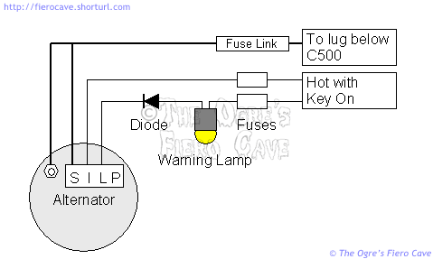
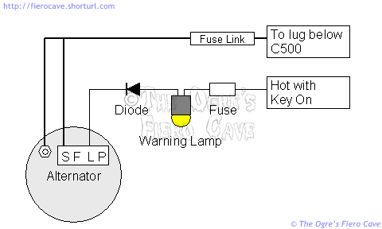

Go Home
Site Map
Go Home
Site Map
Delco (Delphi) CS family alternators
Note: Some things in this article are relevant to all charging systems but it is specifically aimed at the CS family.
Like many things used in Fiero production, allot of the charging system is left out of many technical data sources. A big chunk involves the use of a new, at least new then, type of alternator. The new CS, apparently short for Charging System, alternator family was installed, which are quite a bit different from the old SI family used previously.
The OE CS family at a glance:
- CS-121 with outputs from 61 to 74 amps peak.
- CS-130 with outputs from 85 to 105 amps peak.
- CS-144 with outputs from 108 to 140 amps peak.
There are others like CS-130D that we're going to ignore here.
These alternators are significant improvements over the SI series they replaced. The list of improvements is pretty long, read about them in the links, but the greatest improvement is energy density. These units put out allot of power for their size and weight. CS units generate considerably more power than equivalently sized SI units, and out power even larger SI units at Idle and low RPM. (The number part of the CS-xxx name is the rotor diameter in mm.)
CS family alternators were used starting with the 1987 model year up thru 1995-6 models. Exactly when they started and ended in each car line varies some. In Fiero, I believe they were only used in 88 V6, 87-88 L4 models and that only the CS-130s were used. (It's possible that some L4 as early as 85 have CS instead of SI units.)
The CS family is a vast improvement over the SI family but there are still upgrades that can be made that further improve reliability and/or increase output current. Keep in mind that because of space constraints that not all upgrade options will fit in Fiero.
You can easily identify a CS family alternator by the weather sealed 4 terminal connector.
Alternator Amp ratings
There are Two ratings for alternator output. (I'll stick with GM/AC Delco data for this part.)
- Peak output. This is the number most people are familiar with. It is the maximum output the alternator delivers at its maximum RPM. (Alt Shaft RPM NOT Engine RPM!)
- Output at 1600RPM. This is closer to the output you will receive at idle and slow cruising. (Most alternators spin about 2x crank shaft speed.)
A handy example is a 74amp CS-121... This alternator peaks at 74 amps but delivers only 40 amps at 1600 RPM. Similarly, a CS-130 with 105 amp peak may only give 60-70 amps running around town.
If you run an alternator setup that is too small current wise you run into problems.
- For one thing the alternator can run way hot. Not good in an already hot environment.
- Depending on how under rated the setup is, you can kill the battery.
- At the very least you'll be short on current for little things like the Fuel Pump and Ignition. This degrades engine performance and can cause false ECM errors.
What this means is that if you add electrical equipment to the car, you might need a bigger alternator than you think to meet the increased power needs. If you've slowed the alternator shaft by installing an under drive pulley you could easily compound such problems, especially at idle or during city driving.
Wiring
WARNING! There are two major variations of the CS power regulator! If you are not 100% sure which one you have in your hand then don't hook up anything to Terminal I/F.
Note: Alternator dash lamp is equal to 52Ω resistor. CS and SI need that resistance to work. Shorted to 12v can damage the alternator.
The alternators look identical. The difference is how one terminal in the control connector is wired. In one version that terminal is "I" and in the other it is "F". I haven't found any easy way to identify them short of opening the alternator case.
Identification of vehicle setup
DO NOT rely on this method of identification in other cars! Some cars use the F and/or P terminal.
In Fiero, you can tell which setup the car has by counting the wires on the control plug. 3 wires is the Version I setup and 2 wires is the Version F setup.
As I understand it, the 87-88 L4 has the I setup. Older L4 with CS have might have an F setup. (My 87 has a 3 wire control plug.) I don't know which setup is in 88 V6 Fiero.
Some schematics show a diode between the lamp and alternator. I don't know where it is, if it's really there or even needed. Even "official" Fiero schematics don't all agree so I left it in my drawings.
Version I
Here's a simplified schematic of the new wiring for 87. (This is based on the All-data sheet for 87 L4.) This wiring is used for 87-88 L4 and I believe 88 V6.

Terminal I is backup in case the lamp or diode fail in the L circuit. Terminal P is not used.
Version F
1986 Fiero with L4 engine might received a different version of the CS alternator. (Manual not sure.) This version uses a different regulator and MUST NOT be installed in place of the one above. This alternator has an F terminal instead of an I terminal and is wired as shown to below.

The F terminal is connected to the Field winding in the alternator and is not used in Fiero. Terminal P is not used.
Swapping versions
I don't recommend you swap alternators between setups but in a pinch you might have to...
In Fiero Only!
- You can use an I regulated CS to replace an F. Since F is not used in Fiero it doesn't matter.
- You CAN NOT use an F regulated CS to replace an I unless you disconnect the wire from terminal I of the harness connector. You will loose the redundant enable circuit if you do this. That means the alternator won't turn on if the dash lamp quits.
It won't light
WARNING! NEVER disconnect the battery while the car is running! You can fry the alternator, ECM, and other things if you do that.
Testing the charging system is different from SI units. THREE steps MUST be taken before assuming a CS alternator is electrically dead. (Obviously if it fried a bearing the thing is dead.) You should also verify the first two before installing a replacement alternator.
- Battery MUST be charged and properly connected. CS alternators WILL NOT turn on if the battery is flat. (This is to protect the alternator from overloading.)
- The Warning Lamp must be operational. In many vehicles, including Fiero, the Warning Lamp is part of the wiring that turns on the alternator.
- The car must be running at least a couple minutes before testing. CS alternators don't provide full load on startup. This is an intentional design of the unit.
In vehicles where the PCM controls the alternator... If the PCM registers an electrical system error, you usually have to reset the PCM before a replacement alternator will turn on. (This applies to late versions of OBD1 and most OBD2 cars. It doesn't apply to any OE Fiero.)
Shouldn't the car stay running with the battery disconnected?
NEVER try this test with any alternator! I'm not kidding. You really can fry things by doing it. You also create an explosion hazard. People have been doing this for years but it was never a safe thing to do in the first place. You can blow the voltage regulator and other things if you do this.
In addition to the very real hazard of detonating hydrogen from the battery, you now generate large current and voltage spikes in the system. These spikes are just as bad for your car electronics as they are for your home computer and entertainment equipment.
Quick test
A fully charged battery should read 12.6 volts. CS alternators won't turn on if the battery drops much below 12V.
The alternator should push 13-14 volts on dash meter when the car is running. (14.7 volt is spec at the alt's outlet.) Voltage should remain nearly constant. Monitor voltages at idle and during both slow and quick throttle changes.
If the alternator isn't working:
- Shut off the car
- Unplug the control connector from the alternator
- Turn the key on (Don't start the car.)
- Check the voltages on the harness connector. The heavy Sense wire should show battery voltage at all times. The L terminal should show voltage when the key is on but it may be less than battery voltage. If equipped, the I terminal should also show voltage when the key is on.
Full test
Take the car or alternator to a service center or parts store. Many of them will test the system for free. When possible, in car testing is better than bench testing. Testing in the car can also expose wiring problems or weak battery much faster.
SI-CS conversion
Before you ask, Yes, you can replace SI alternators with CS units. I'm not going to cover this in detail because I have no way to verify all of it. You need a SI-CS harness adaptor and a CS unit that fits in your brackets. (You could also splice on the CS connector for a cleaner setup. No, I don't know how to wire that.)
When you convert to a CS using the adaptor, you end up wired like Version F above. The adaptor will link the SI A & B terminals on the harness to the CS S & L terminals. It doesn't matter which regulator is in the alternator because the I/F terminal isn't used in conversions.
Do I have to convert?
It's up to you... There are aftermarket 12-SI alternators available with outputs to 140 amps peak. (12-SI can replace a 10-SI directly.) The CS units are generally better alternators and aftermarket options can make them even more rugged and higher output.
One important consideration... The CS units have an second fan inside the housing that provides better cooling than the SI family. (The change to CS for 88 was likely a factor in the deletion of the V6 aux fan in 88.)
A few people around the forums have installed CS units in the older V6 cars. That I'm aware of they are all happy with them. The conversion to CS130 is pretty popular in allot of other forums as well. Not just for GM cars either. A number of the import groups have also used it in place of hard to find obsolete foreign parts.
Do they fit?
A forum member, Birdpoo, has told me that the CS alternator for the 88 V6 is a direct fit for the older V6. Part numbers for wiring adaptor are in the Novasource article. I believe you want the non resistor ones but read the Novasource article to be sure.
If you are planning to use an "Iceberg" CS130, make sure you have clearance for the fins on the case. I'm told CS144 based units will not fit without changing brackets.
If you are converting other vehicles, you may have to change the pulley. According to the Novasource article linked below, the SI pulley fits the CS shaft. DO NOT over tighten the pulley! The pulley nut must be hand torqued to 60-80 Ft/Lbs.
Engine Conversion
The CS also becomes an issue in some engine conversions. Some later version ECM/PCM boxes look for output from terminals F and/or P. Some even control line L. If your computer is throwing codes over electrical problems you may want to look into this.
Links
Detailed testing and Rebuilding info from Quick Start Truck & Auto Electric Products. They also have conversion kits to convert 85-105 amp CS-130s to 140 amp outputs. These kits use the "Iceberg" rear housing from Dubois Marketing that is supposed to provide better cooling of the regulator and rear bearing.
Note: I'm not sure "Iceberg" CS-130 alternators fit on 87-88 L4. I don't think the fins will clear the intake manifold but without one to verify I can't say for sure. I don't think any CS-144 will fit. I don't know what will fit older L4 or any V6.
You can read more about SI to CS conversion at NovaResource.com - SI to CS Alternator Conversion. The process for a Nova is about the same as any other GM car.
For a Fiero specific conversion you can read Rabid-Wombat's CS-130 Conversion for 85-87 V6 Fiero.
If you want even more info, go to Google and search ("CS-130" Delco alternator) or (CS130 Delco alternator). Include everything inside the parenthesis, including the quotes.